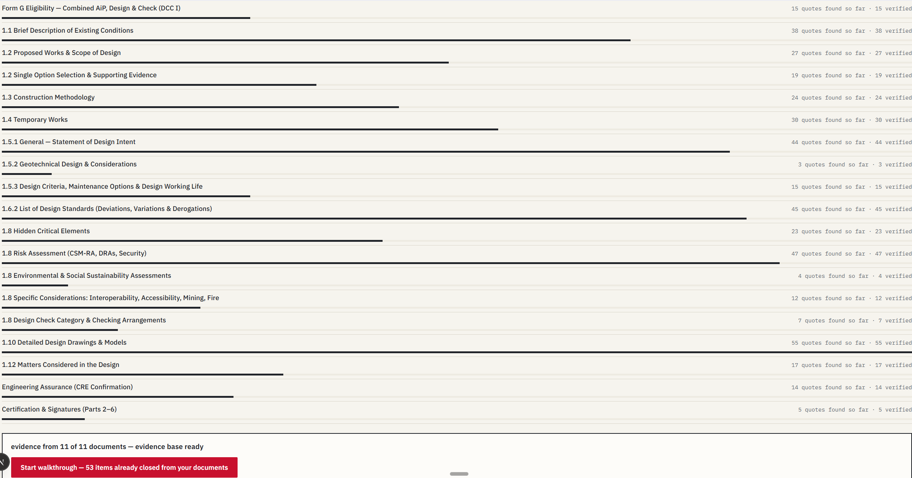
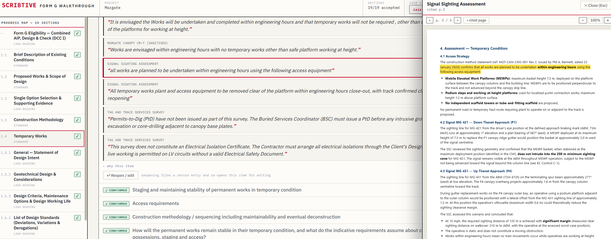
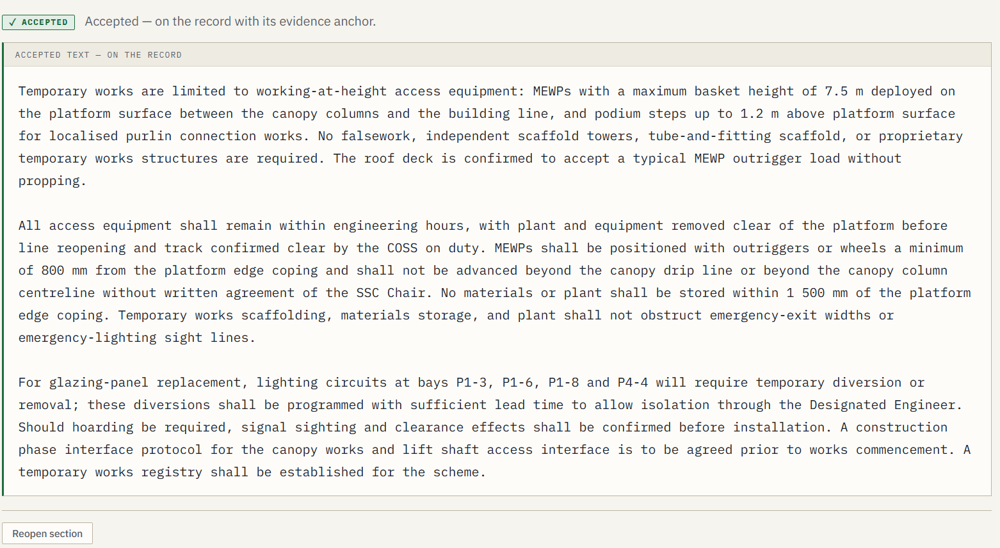
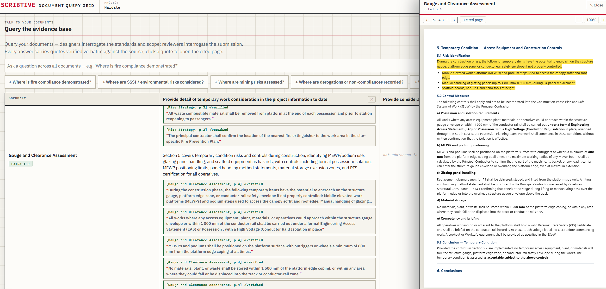
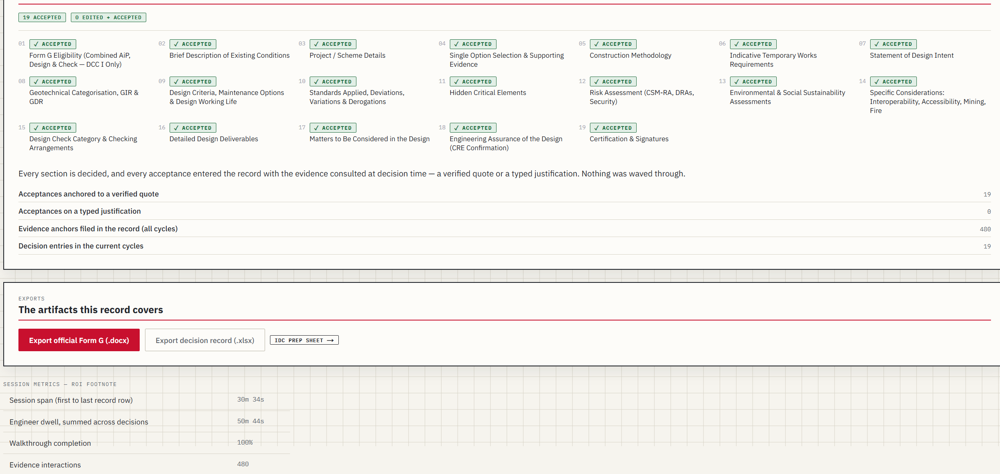

It is half past ten on a Thursday. Five PDFs are open, ProjectWise is loading, and a Teams message asks where the Form G draft is. The engineering was finished days ago.
The week that disappears
If you have ever owned an NR/L2/CIV/003 Form G, you know this week.
The Combined Approval in Principle and Design Certificate is not a formality. For Category 1 permanent works there is no construction without it. Network Rail cannot issue Approval for Construction (AFC) until it is signed.
So the work matters. The trouble is where the time goes.
A competent Contractor's Engineering Manager or Design Project Engineer does not spend that week deciding things. They spend it gathering. Locating the right revision of a drawing. Cross-checking a calc pack against the geotechnical report. Hunting for the line in the hazard log that confirms what they already know. Drafting the twelve prescribed sections under Issue 8 of the standard, cross-referencing the Eurocode design forms, then chasing three designers for inputs that should have been there at the start.
In our experience a single first-issue Form G can absorb twelve to twenty hours of senior engineering time. The actual engineering judgement inside that document might take an afternoon.
The rest is assembly.
The engineering was finished days ago. The week went on everything around it.
What the certificate actually promises
Here is the reframe worth holding onto.
A Form G is a promise. When an engineer signs it, they are certifying that the design is sound, that it meets the applicable standards, and that they have exercised competent professional judgement in saying so. The signature carries their name, their competence, and the professional indemnity that stands behind it.
That signature is the product. It is the thing Network Rail cannot proceed without, and the thing a client is genuinely paying for.
Everything before the signature, the locating and cross-referencing and formatting, is overhead. Necessary overhead, but overhead. It does not draw on the years of expertise that justify a senior engineer's day rate. We have simply never had a good way to separate the two.
So we make our most accountable people spend a week earning the right to give a signature that takes a minute.
The invisible tax
Now widen the lens, because this is not only one engineer's frustration. It is a tax on the whole programme.
When a Form G takes three weeks instead of two days, the delay does not stay contained. Construction packages cannot go to tender without the design certificate. Network Rail cannot issue Approval for Construction. Contractors cannot mobilise. Every week of slippage on a major civils package carries preliminaries, and eventually liquidated damages, that flow back to the public purse.
Multiply that across a portfolio. Network Rail's CP7 settlement runs to roughly £44 billion over the five years to 2029, on top of HS2 and the devolved programmes. The documentation load underneath all of it runs into millions of engineer-hours. None of it shows on a programme dashboard. It is the cost nobody line-items, because it hides inside the day job of people too busy to measure it.
The Institution of Civil Engineers has even asked, in a green paper, why major infrastructure projects in this country cost so much and take so long. Part of the answer is sitting in the assurance workflow, in plain sight.
The part nobody puts on a dashboard
There is a quieter cost, and it is the one that should worry us most.
Design assurance certificates exist because inadequate checking has, in the past, contributed to failures in safety-critical infrastructure. The certificate is a safety control in its own right.
When an engineer produces that certificate under programme pressure, or from incomplete information because gathering it was too painful, the quality of the assurance is the first thing to suffer. Not the formatting. The assurance. The very thing the certificate exists to guarantee.
The tax is not only time. It is the integrity of the thing the certificate exists to protect.
So the problem is sharper than slow. A process that exhausts the engineer before they reach the judgement is a process that quietly erodes the judgement. We should want the opposite. We should want the engineer arriving at the decision rested, with complete and well-referenced information already in front of them.
Here is the reframe
The instinct, when a team is drowning in this, is to add people. Hire another CEM. Borrow a DPE. Scale the team to clear the backlog.
I would gently push back on that instinct. The sector is short of competent CEMs, DPEs and CREs already. You cannot hire your way out of a shortage, and you would not want your best engineers spending even more of their week on assembly if you could.
Stop scaling the team. Start scaling the system around it.
The assembly, the locating and cross-referencing and first-draft writing, is system work. It can be done by a system that knows your standards, reads your project documents, and shows its working. The judgement stays exactly where it belongs, with the competent engineer who signs.
Protect the judgement. Systematise the assembly.
That is the principle behind Scribtive, the tool we are building for rail design assurance. It is easier to show than to describe, so here is what it actually looks like on a real Form G. The example below uses our sanitised sample project, a like-for-like canopy refurbishment at a station.
What that looks like in practice
You start by giving it the project. The drawings, the surveys, the hazard log, the CR-T. It reads them, then shows you every prescribed section of the Form G with the evidence it has already found for each one, and how much of that evidence it has verified against the source. The week that used to vanish into gathering is now visible work, laid out in front of you before you write a word.

It then drafts each section from that evidence. Where the support is strong, it drafts with confidence. Where it is thin, it flags for human guidance rather than inventing something plausible. The source document sits beside the draft, not buried three folders deep in ProjectWise. You are reading and deciding, not foraging.

Nothing reaches the certificate until the engineer accepts it. When you accept a section, it goes onto the record with the evidence that justified it attached. The judgement stays human. The assembly does not. This is the line I will not cross in any tool we build. The AI drafts, the engineer decides, and the record proves who decided what.

It cuts both ways, which matters for the people on the Network Rail side. As a DPE I used to review submissions by opening five PDFs and reading until I found what I needed. Here, the reviewer can simply ask the evidence base a question, and every answer comes back as a verified quote linked to the page it came from. The review gets faster, and more importantly, better evidenced.

And at the end, the part that closes the loop. Every section decided, every acceptance anchored to a verified quote or a typed justification, nothing waved through. Then it exports the official Form G. The signature now sits on top of a complete, evidenced trail, which is exactly what the certificate was always supposed to be.

Where to start
You do not fix this by rolling a platform across a programme on day one. You fix it the way you would de-risk any new method. You pilot it.
Take one Form G from your current workload. One structure, real work, real standards. Run it through, side by side with how you would have done it anyway, and judge it on the two things that matter. Is the assurance at least as good. And did it give your engineer their week back to do engineering.
If it does both, you have not bought a faster way to fill in forms. What you have bought back is judgement time, with a record that proves the thinking happened. That is worth far more than the hours it saves.
If your best engineers had that week back, what would they build with it?
I would genuinely like to know where your programme loses its Form G time, and whether the fix is information, judgement, or just somebody finally measuring it.
Scribtive is being built for exactly this. If you would like to follow it, or try it on one of your own Form Gs, join the waiting list at automatex.uk.